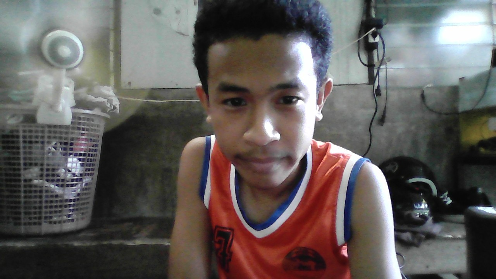

Hi, I'm Kenneth Kenjie P. Desamparado, an Information Technology student who is passionate about technology and web development. I enjoy learning how websites and applications are created and improving my programming skills. I have experience with HTML, CSS, JavaScript, Java, C++, Python. I am currently focused on improving my skills in web development, backend development, and cybersecurity. I consider myself a hardworking and motivated person who is always willing to learn new things. My goal is to continue developing my skills and become a successful Web Developer in the future.